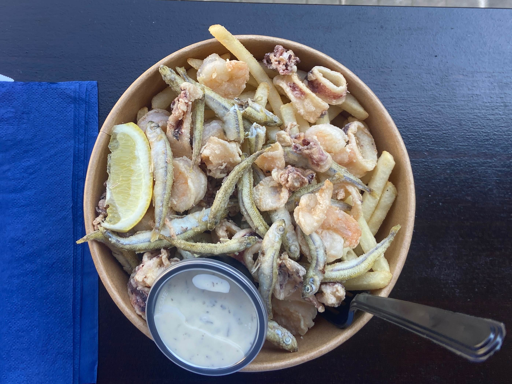
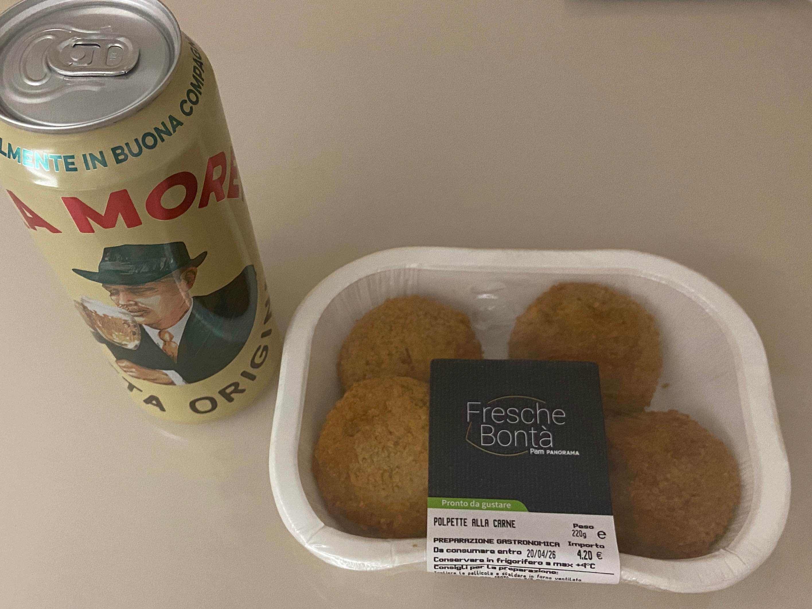
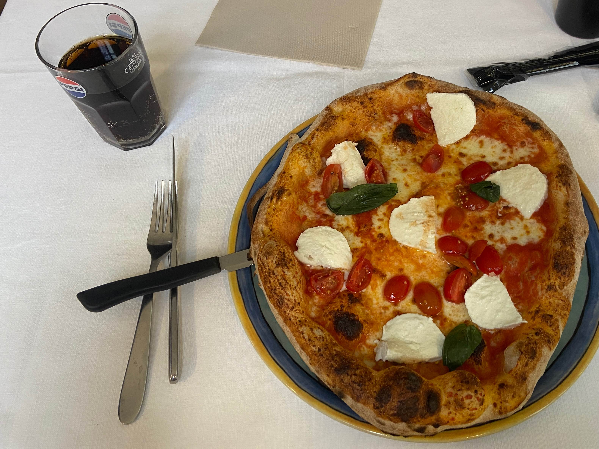
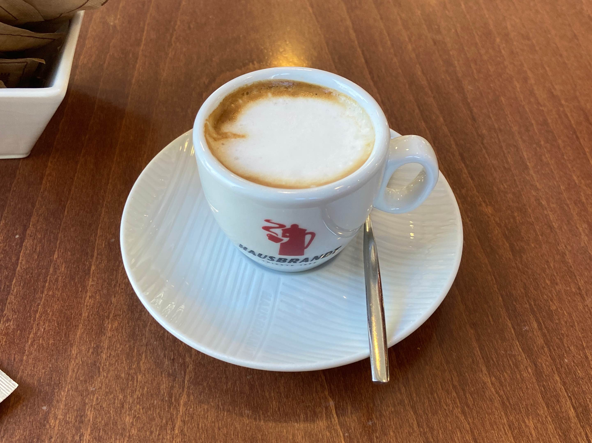

Pula is a great coastal city with a biggest number of Roman ruins in Croatia, and
Udine is a small, cosy city with its unique regional northern Italian cuisine.
I could find many great places to visit and some restaurants where offer good and cheap cuisine.
プーラはクロアチアの海岸に位置する都市で、国内では最大級の古代ローマ遺跡があります。ウディネは北イタリアの小さな都市で、伝統料理で有名な町です。今回の旅行では、いろいろな素晴らしい場所を訪れ、美味しいレストランを見つけることもできました。
| 7. Apr | 0:45 Salzburg → 9:25 Pula (Bus) | |
|---|---|---|
| Sightseeing in Pula / プーラで観光 | ||
| 15:40 Pula → 21:50 Udine (Bus) | ||
| 8. Apr | Sightseeing in Udine / ウディネで観光 | |
| 17:15 Udine → 21:53 Salzburg (Train) |

Because Pula is a costal city, you can of course find many restaurants that offer great seafood.
Fritto misto means "mixed fry" and this one has fried sardines, shrimps, and squids with french fries.
The potion was huge and the ingredients were fresh. They don't do pre-made dishes, so it will take around 10
minutes to serve, but the time is really worth it!
プーラは港町なので、もちろん美味しいシーフード料理が食べられます。
フリット・ミストはイタリア語で「ミックスドフライ」という意味で、これにはイカ、エビ、イワシと付け合わせのフライドポテトが入っていました。
量はとても多く、材料も新鮮でした。注文を受けてから作るため10分ほどかかりますが、待つ価値はあると思います。

Polpetti are Italian-style meatballs. I bought these in the city of Trieste, where I stopped over while transferring buses, but to be honest, they were a bit bland. I wish they had come with some kind of sauce. The beer is a brand called Moretti, which you can find in any supermarket in Italy. It’s a lager with a refreshing, smooth taste; typical of Italian beer.
ポルペッティとは、イタリア風の肉団子のことです。これはバスの乗り継ぎで立ち寄ったトリエステという街で買ったものですが、正直なところ、味が少し薄かったです。ソースなどがあれば良かったと思いました。ビールはモレッティというブランドで、イタリアならどのスーパーでも買うことのできるものです。味はイタリアビールらしい、クセのない爽やかな味のするラガービールです。

Pizza and pasta aren’t the only Italian dishes, but when you go to a place that’s affordable, delicious, and welcoming even for solo diners, you end up ordering pizza or pasta anyway. “Bufala” refers to buffalo mozzarella, a wonderful cheese that has a depth of flavor you don’t find in cow’s milk cheese, yet remains fresh and easy to eat. The pizza I ordered was topped with buffalo mozzarella and tomato sauce, and then topped again with fresh tomatoes and more buffalo mozzarella—and it was a very generous portion. The pizza was baked to order (as is standard at any decent pizzeria in Italy), so I was able to enjoy the fresh, chewy crust.
ピザとパスタだけがイタリア料理ではありませんが、安くて美味しく、尚且つ一人でも入りやすい場所に行くと結局はピザかパスタを食べることになります。ブッファラとは水牛のモッツァレラチーズのことで、牛乳のチーズにはない深みがありつつもフレッシュで食べやすい素晴らしいチーズです。私が頼んだピザは、ブッファラとトマトソースを載せて焼いたピザの上にさらに生のトマトとブッファラを乗せたもので、これもとても量が多かったです。ピザは注文されてから焼き上げられ（イタリアのまともなピッザリアはみんなそうですが）、新鮮でもちもちした生地が楽しめました。

Coffee culture is deeply rooted in Italy, so you can easily pop into a café for a quick break. Prices are reasonable—you’ll be fine with just around 2 euros. “Macchiato” means “stain” in Italian, and here it refers to the small amount of milk added to the drink. Some people say espresso is too bitter to drink, but espresso isn’t meant to be drunk black; you’re supposed to sweeten it by adding one or two packets of sugar from the table. Drinking it when you’re feeling a bit tired is great—the sweetness and rich flavor really refresh you. As a side note, in Italy, espresso is called “caffè”, meaning “coffee.” So, strictly speaking, it’s not “espresso macchiato” but “caffè macchiato”.
イタリアではカフェ文化が強く根付いているので、気軽にカフェに入って一休みできます。値段も安く、だいたい2ユーロほどあれば全く問題ありません。マキアートというのはイタリア語で（汚れの）シミのことで、ここでは少しだけ入っているミルクのことを指しています。よくエスプレッソが苦くて飲めないという人がいますが、そもそもエスプレッソはそのまま飲むものではなくて、テーブルにある砂糖を1、2袋入れて甘くして飲むものです。少し疲れている時に飲むと、甘さと味の濃さで体をリフレッシュできてとても良いです。余談ですが、イタリアではエスプレッソのことを'caffè'、つまり「コーヒー」と呼びます。なので正確にはespresso macchiato ではなくcaffè macchiato（カッフェ・マッキアートと発音します）です。
I'll write it if I feel like it.
あとで書きます。